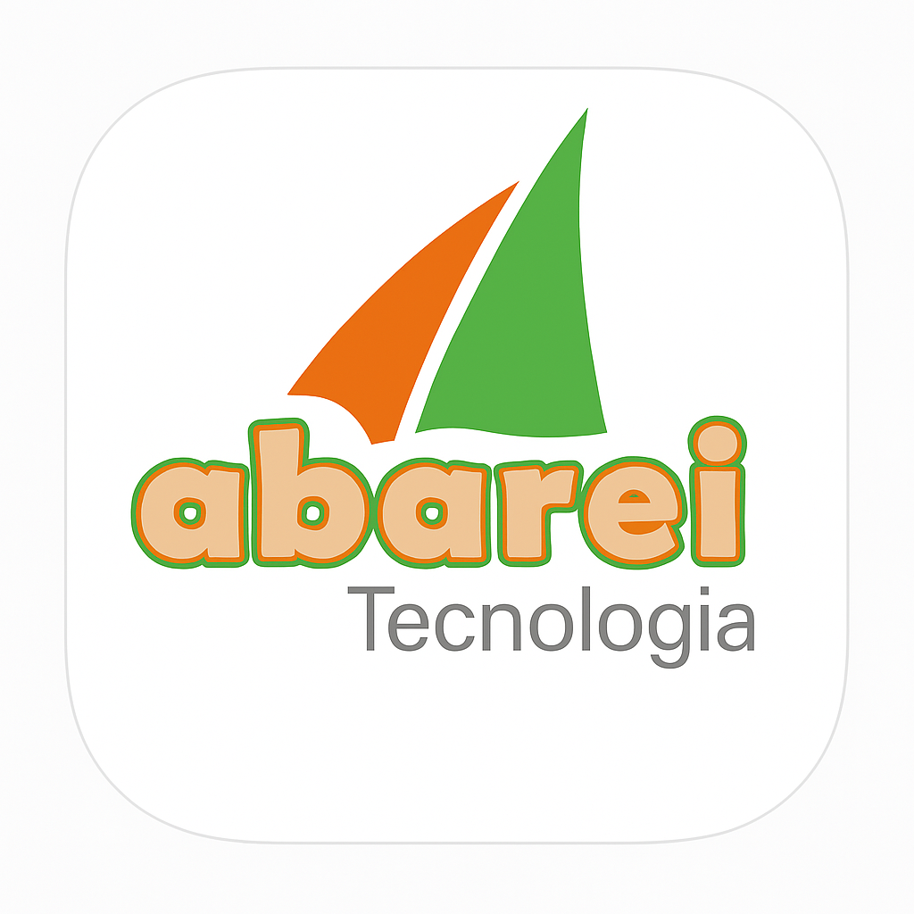

Quando uma oferta tem parcelamento “sem juros” e um preço mais baixo ao pagar com PIX,
há sempre juros reais embutidos nesta transação.
Este aplicativo revela instantaneamente a taxa de juros, permitindo a decisão consciente
Ver Política de Privacidade 